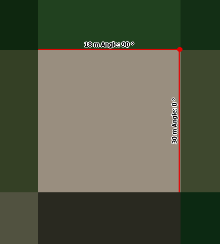
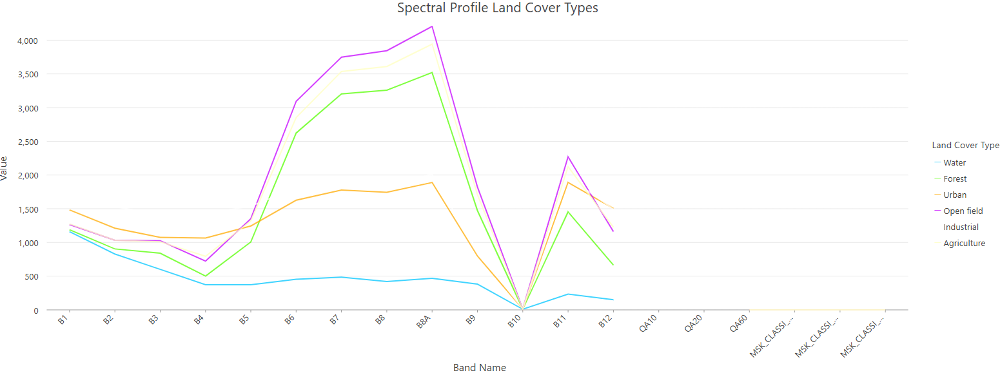

Land Use Classification
Mapping the land use of in the region of the City of Utrecht
The land cover of the Earth is what we see when we look down from the sky. It is the physical material at the surface of the earth. The manner in which this land is used is called land use, and has a significant influence on the environment. Thus, classifying land cover is an important part of environmental monitoring.
Project Overview
In this assignemnt, I will generate a land cover classification map for the region of the City of Utrecht, using the data collected by my classmates and I.
Theoretical Background
Automated land cover classification
Classifying land cover in an area used to require on-site data collection. This involves people spending hours determining
the type of land cover and recording this. With automated land cover classification this process is a lot faster, resulting in more data!
Two paradigms of classification are supervised and unsupervised classification. The former requires labeled data. This labelled data is
used as the ‘training data’ to determine patterns, which are then used to classify newly provided data.
Unsupervised classification is used for unlabeled data, the pixel value is unknown. The different classes are based on the natural groupings
or clusters present in the image values. There are numerous clustering algorithms that can be used to determine the classes, a common form being the K-means approach.
Methods
The land cover classification map was generated using the Classification Wizard in ArcGIS Pro.
The Classification Wizard is a tool that allows you to create a land cover classification map using either supervised or unsupervised classification methods.
The training samples were collected by my classmates and I during a field trip to the City of Utrecht. A satellite image of the region of interest was added
to a base map retrieved from QuickMapServices. The training samples were then digitized on top of the satellite image, and I manualy assigned land cover classes to each
sample using the 'Spectral Profile' tool. The classified land cover types were Forest, Open field, Urban, Water and Agriculture.
With this, I attempted to create a signiture file.
The 'Classification Wizard' tool was used to perform an Unsupervised Pixel Based Classification, an Unsupervised Object Based Classification and a Supervised Pixel Based Classification.
For the supervised classification, the training samples were then used to train the classifier, which was then used to classify the entire study area.
Finally, the NDVI was calculated using the 'Raster Calculator' tool, and the results were compared to the land cover classification map.
Findings and Results
Spatial ResolutionTo determine the spatial resolution of the satellite image, I used the 'Measure' tool in ArcGIS Pro. The width of a pixel was 18 meters, the length 30 meters. This means that the spatial resolution of the satellite image is 18 meters by 30 meters.


Say something about spectral profile
Land Cover ClassificationUnsupervised, Pixel Based
Unsupervised, Object Based

Supervised, Pixel Based
Based on the results above, I would classify the classification models from least to most detailed and accurate as follows: Unsupervised Object Based, Unsupervised Pixel Based, Supervised Pixel Based. The supervised classification model is the most detailed and accurate, as it uses training samples to train the classifier. The unsupervised classification models are less detailed and accurate, as they do not use training samples. The object based classification model is the least detailed and accurate, as it uses a segmentation algorithm to group pixels into objects, which can result in loss of detail.
NDVI
As mentioned before, the NDVI is a measure of vegetation health. In the image above, there are a few areas coloured orange. However, these are each bodies of water, and thus the area is quite healthy. The colour scheme that was chosen was a colour ramp from red to green, with red being the lowest value (unhealthy vegetation) and green being the highest value (healthy vegetation). This scheme makes it very easy for the general audience to understand the results of the NDVI, as people commonly associate the colour green with thriving vegetation, making it a very intuitive colour scheme. However, a red to green colour ramp is not very suitable for people with colour blindness.
Reflection
NO CONFUSION MATRIX Question 10: What are the strengths and weaknesses of each of the methods you tried and shared above? What unique insight did you find from each? Were there any anomalies in the data? 5 I couldnt manage to upload to arcgis online due to an errors concerning the layer type, and input exceeding operating system limit. This assignment showed me the potential of publcly available data. I enjoyed visuaizing the elevation of a place I am familiar with, and comparing it to a map of almost 240 years old.
Project Details
- Course: GIS and Cartography
- Instructor: Britta Ricker
- Date: 17 June 2026
- Study Area: The Hague
Software & Tools
- QGIS
- ArcGIS Pro
- Spectral Profile
- QuickMapServices
- Google Earth Engine
- Python